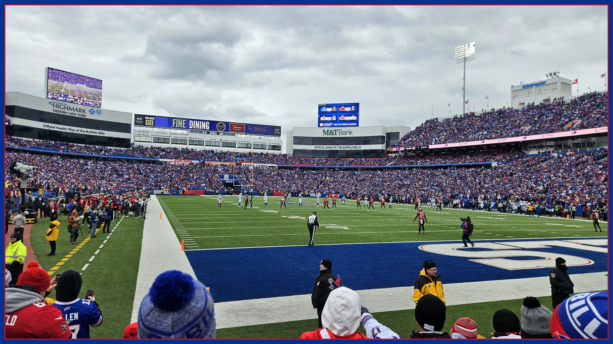

Bills Mafia's trade deadline wishlist, ranked by delusion
The deadline is Nov. 10, the cap room is $4.1 million, and Bills Mafia's wishlist ranges from a genuinely sensible safety to a defensive tackle who already plays for the 49ers. Tommy ranks all five names by delusion.

Welcome back to The Tailgate, where the grill is hot, the opinions are hotter, and the NFL trade deadline — November 10, write it down — has turned every Bills fan I know into an amateur general manager with a group chat and absolutely no access to the salary cap spreadsheet. Buffalo is 5-1. The secondary has allowed 29 or more points in five of six games. And so the wishlist season is officially open. Today we rank the names floating around Bills Mafia by the only metric that matters in late October: delusion. From 'actually, that could happen' to 'sir, that man already plays for somebody else.'
No. 5 on the delusion scale — basically sober: Amani Hooker. This is the fresh one, and it is suspiciously reasonable, which is why it feels wrong to type. Athlon reported Wednesday morning that Bleacher Report's Kristopher Knox put the Tennessee safety at No. 10 on his trade block big board, named Buffalo and Washington as the suitors, and projected the price at a 2027 fourth-round pick. A fourth! For a starting safety on a 1-6 Titans team that has every reason to answer the phone! The coverage numbers travel with him, too: quarterbacks have posted an 81.2 passer rating throwing at Hooker this season per Pro Football Reference, and PFF's version is even kinder at 70.1, 17th among safeties. A real need, a real seller, a real price a 5-1 team can pay without mortgaging January. Delusion level: so low I had to check I was still on the internet.
No. 4 — one beer in: Zack Baun. Locked On Bills host Joe Marino called the Eagles linebacker his favorite deadline idea, and the logic is genuinely good, which is exactly how delusion gets its foot in the door. Baun played for defensive coordinator Jim Leonhard at Wisconsin, so he'd arrive already speaking the defense's language — no Rosetta Stone, no three-week adjustment period. The problem is the other end of the phone. Philadelphia has to voluntarily trade Buffalo a 29-year-old starter in the middle of the season, and contenders generally do not run a charity drive for other contenders. Possible? Sure. Likely? That's the beer talking.
No. 3 — the group chat is cooking: Budda Baker. Heavy reported Tuesday that Bleacher Report's Alex Kay put Buffalo at the top of his list of teams that could make a 'shock' trade, and the shock target is Arizona's eight-time Pro Bowler and four-time All-Pro. Baker is a phenomenal football player. He is also, per that same reporting, playing on a three-year, $54 million extension he signed in December 2024, under contract through next season — while Buffalo's available cap space sits around $4.1 million. Four point one. The math on this one doesn't need a calculator; it needs an intervention. Baker on this defense would be incredible. So would a heated driveway. I am getting neither, and for the same reason.
No. 2 — full tailgate confidence: Maxx Crosby. Every deadline season, somebody in the lot explains that actually, the Bills should simply acquire one of the best defensive players alive, as if he's a folding table somebody left by the dumpster. The case writes itself — ESPN's metrics have Crosby 8th among qualified pass rushers in pass-rush win rate at 27 percent and 6th in run-stop win rate at 32 percent — and the cost writes itself right back: the kind of draft capital that makes a front office need to sit down. Buffalo being named a 'potential landing spot' is doing heroic work in that headline. A landing spot is also what my driveway is for airplanes.
No. 1 — maximum delusion, hall-of-fame delusion, frame-it delusion: DeForest Buckner. Bills fans spent the weekend talking themselves into the Colts defensive tackle as Ed Oliver insurance — and I get it, the fit was beautiful, right up until the part where it stopped being available. Buckner has already been traded. To the 49ers. Reported Tuesday. He is, at time of writing, a member of a different football team, which I would describe as a significant obstacle to acquiring him, second only to his $26.6 million cap hit, which was always a non-starter against Buffalo's $4.1 million anyway. Wishing for Buckner now isn't optimism. It's a tribute band. The man is gone, the dream is gone, and somewhere a 49ers fan is having the exact conversation we were having on Saturday, except his ends with a jersey order.
So here's the Tailgate's official advice for the next thirteen days. Dream in the Hooker tax bracket: a real starter, from a real seller, for a pick that won't haunt anybody's draft party. Let the Baker and Crosby talk keep the group chat warm — that's what it's for — and pour one out for the Buckner era, which lasted one glorious weekend and produced zero defensive tackles. The deadline is November 10. The Ravens are Sunday, 1 PM ET at Highmark, and if the secondary holds up against a returning Lamar Jackson, half this wishlist gets quieter by Monday. If it doesn't? Clear your schedules. The delusion rankings get a sequel, and nobody in this fan base has ever once responded to a problem with less delusion. Go Bills.